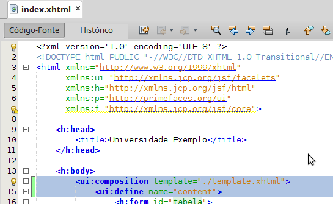

Facelets
É uma linguagem de descrição de páginas (PDL) criada especialmente para o JSF - estabelecendo uma linguagem entre templates que suporta a criação da árvore de componentes das telas JSF, permitindo assim o reuso de padrões de telas e a composição de componentes JSF para formar novos componentes.
De forma resumida, iremos utilizar os facelets para atualizar apenas as seções que desejamos, evitando recarregar toda a página quando apenas uma pequena porção sofre modificação.
Vamos integrar os facelets em nosso projeto:
Primeiramente crie um novo Modelo de Faceletes, para isso, clique com o botão direito no projeto e selecione Novo > Outros.

No campo Categorias selecione JavaServer Faces, em seguida em Tipos de Arquivos escolha Modelo de Facelets.

Defina um nome do seu Modelo de Facelets, aqui será template.xhtml.
Depois disso você deverá optar pelo modelo cujas seções sejam mais adequadas ao seu projeto.
Para este exemplo será utilizado o modelo composto por 4 partes, sendo elas: top, left, content e bottom.

Clique em finalizar e o arquivo deverá ser criado dentro das Páginas Web do seu projeto.

Esta imagem mostra o template gerado com algumas modificações - fique atento para os campos dentro da tag "head", onde ocorre a referência aos arquivos de css. A tag padrão "outputStyleSheet" gera alguns problemas de compatibilidade com o glassfish, por isso devemos modificar para o modelo da imagem.
Para integrarmos nosso index.xhtml com o template criado basta inserirmos duas tags.
A primeira <ui:composition> serve para referenciar o caminho do template.
A segunda <ui:define> serve para definir qual é a parte do nosso layout que iremos customizar.
Neste caso está definido que o index irá aparecer dentro do content.
Agora iremos criar um arquivo customizado para cada facelet, sendo bottomFacelet para a parte inferior da página, leftFacelet para o menu na parte esquerda, topFacelet para o topo da página. Nosso atual index servira para ocupar o nosso content.
Para criar novas páginas xhtml basta clicar com o botão direito em seu projeto e selecionar Outro e depois Arquivo XHTML

Abaixo estão os códigos para cada uma das partes.
topFacelet.xhtml
<?xml version='1.0' encoding='UTF-8' ?>
<!DOCTYPE html PUBLIC "-//W3C//DTD XHTML 1.0 Transitional//EN" "http://www.w3.org/TR/xhtml1/DTD/xhtml1-transitional.dtd">
<html xmlns="http://www.w3.org/1999/xhtml"
xmlns:h="http://xmlns.jcp.org/jsf/html"
xmlns:p="http://primefaces.org/ui">
<body>
<div align="center" style="font-size: medium">
Título / Logotipo
</div>
</body>
</html>
leftFacelet.xhtml
<?xml version='1.0' encoding='UTF-8' ?>
<!DOCTYPE html PUBLIC "-//W3C//DTD XHTML 1.0 Transitional//EN" "http://www.w3.org/TR/xhtml1/DTD/xhtml1-transitional.dtd">
<html xmlns="http://www.w3.org/1999/xhtml"
xmlns:h="http://xmlns.jcp.org/jsf/html"
xmlns:p="http://primefaces.org/ui">
<body>
<div align="center" style="font-size: medium">
Menu
</div>
</body>
</html>
bottomFacelet.xhtml
<?xml version='1.0' encoding='UTF-8' ?>
<!DOCTYPE html PUBLIC "-//W3C//DTD XHTML 1.0 Transitional//EN" "http://www.w3.org/TR/xhtml1/DTD/xhtml1-transitional.dtd">
<html xmlns="http://www.w3.org/1999/xhtml"
xmlns:h="http://xmlns.jcp.org/jsf/html"
xmlns:p="http://primefaces.org/ui">
<body>
<p:separator style="width: 50%"/>
<br/>
<div align="center" style="font-size: medium">
Informações básicas sobre o projeto, contato, direitos autorais, etc.
</div>
</body>
</html>
Fique atento para o fato de que nestas páginas não existem as tags <ui:composition> e <ui:define>, pois elas são necessárias somente nas seções que apresentarão mudanças de forma dinâmica - por exemplo, neste projeto web de Universidade, a única parte que será "trocada" pela navegação de algum botão ou menu, é o "content", por isso utilizamos as tags neste caso, e não nas páginas estáticas (top, bottom e left).
Agora você deverá atualizar o arquivo template.xhtml para cada parte referenciar corretamente os arquivos que foram criados para cada facelet.
<?xml version='1.0' encoding='UTF-8' ?>
<!DOCTYPE html PUBLIC "-//W3C//DTD XHTML 1.0 Transitional//EN" "http://www.w3.org/TR/xhtml1/DTD/xhtml1-transitional.dtd">
<html xmlns="http://www.w3.org/1999/xhtml"
xmlns:ui="http://xmlns.jcp.org/jsf/facelets"
xmlns:h="http://xmlns.jcp.org/jsf/html">
<h:head>
<meta http-equiv="Content-Type" content="text/html; charset=UTF-8" />
<link href="./resources/css/cssLayout.css" rel="stylesheet" type="text/css"/>
<link href="./resources/css/default.css" rel="stylesheet" type="text/css"/>
<title>Universidade Exemplo</title>
</h:head>
<h:body>
<div id="top">
<ui:insert name="top">
<ui:include src="topFacelet.xhtml" />
</ui:insert>
</div>
<div>
<div id="left">
<ui:insert name="left">
<ui:include src="leftFacelet.xhtml" />
</ui:insert>
</div>
<div id="content" class="left_content">
<ui:insert name="content">
<ui:include src="index.xhtml" />
</ui:insert>
</div>
</div>
<div id="bottom">
<ui:insert name="bottom">
<ui:include src="bottomFacelet.xhtml" />
</ui:insert>
</div>
</h:body>
</html>
Atualize também o arquivo res/css/cssLayout.css, removendo as cores de background para cada facelet.

Resultado final: